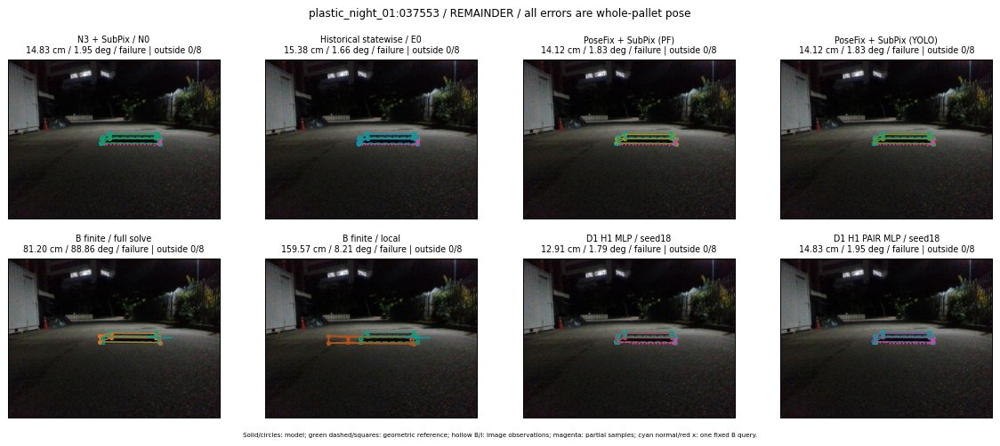
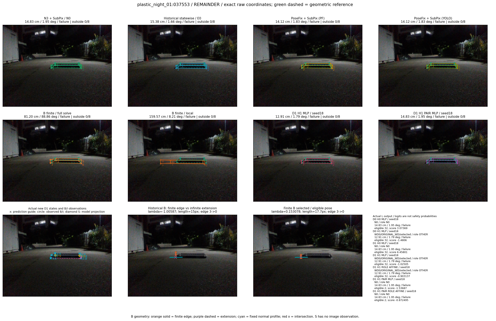

Whole-pallet pose errors; reference is a fixed geometric annotation, not certified physical GT.


Scores are uncalibrated logits. N0 retention is a numerical pose alias; it differs from H0 none or B fallback. B/I and profiles in baseline/B panels are original observations; L panels use new D1 observations. Only one deterministic supported B query is shown in a thumbnail; full support counts are below. Grey privacy rectangles edit the display copy only and are unrelated to O states; all observations were measured on original pixels. Thumbnails use JPEG quality85; detailed scientific panels are PNG.
| Method | Whole pose / cm, deg | Actual source | Selected ID | Score | Archived candidates | Eligible | N0 retained | H0 none | Fallback | Finite profiles |
|---|---|---|---|---|---|---|---|---|---|---|
| Raw YOLO + F | 25.79 cm / 0.93 deg / failure | OTHER | None | N/A | N/A | N/A | False | N/A | None | N/A |
| N3 + SubPix / N0 | 14.83 cm / 1.95 deg / failure | N0 | None | N/A | N/A | N/A | True | N/A | None | N/A |
| Historical statewise / E0 | 15.38 cm / 1.66 deg / failure | E0_REGENERATED | None | N/A | N/A | N/A | False | N/A | False | N/A |
| PoseFix raw | 15.17 cm / 0.64 deg / failure | OTHER | None | N/A | N/A | N/A | False | N/A | None | N/A |
| PoseFix + SubPix (PF) | 14.12 cm / 1.83 deg / failure | OTHER | None | N/A | N/A | N/A | False | N/A | False | historical support records 9; finite audit N/A |
| PoseFix + SubPix (YOLO) | 14.12 cm / 1.83 deg / failure | OTHER | None | N/A | N/A | N/A | False | N/A | False | historical support records 9; finite audit N/A |
| Historical L, seed18 | 14.83 cm / 1.95 deg / failure | N0 | N0 | N/A | 68 | 68 | True | True | True | N/A |
| Historical B fixed bank | 12.91 cm / 1.79 deg / failure | OTHER | G10/ORIGINAL_WD/sample/1 | N/A | N/A | N/A | False | N/A | False | N/A |
| Historical B full | 23.64 cm / 8.46 deg / failure | OTHER | NEW/B/ORIGINAL_WD/h0/G13/ORIGINAL_WD/sample/0/PROPOSED_NATIVE_YAW_0 | N/A | N/A | N/A | False | N/A | False | N/A |
| Historical edge full | 80.35 cm / 89.45 deg / failure | OTHER | NEW/edge/SWAPPED_WD/h0/LOGGED/G13/SWAPPED_WD/outline_consider/47/PROPOSED_NATIVE_YAW_0 | N/A | N/A | N/A | False | N/A | False | N/A |
| Historical AB full | 23.64 cm / 8.45 deg / failure | OTHER | NEW/AB/ORIGINAL_WD/h0/G13/ORIGINAL_WD/sample/0/PROPOSED_NATIVE_YAW_0 | N/A | N/A | N/A | False | N/A | False | N/A |
| B finite / fixed bank | 87.51 cm / 88.77 deg / failure | OTHER | G10/SWAPPED_WD/sample/0 | N/A | N/A | N/A | False | N/A | False | 7/7 |
| B finite / full solve | 81.20 cm / 88.86 deg / failure | OTHER | NEW_FINITE/B/SWAPPED_WD/h0/LOGGED/G13/SWAPPED_WD/outline_consider/47/PROPOSED_NATIVE_YAW_0 | N/A | N/A | N/A | False | N/A | False | 7/7 |
| B finite / local | 159.57 cm / 8.21 deg / failure | OTHER | NEW_FINITE/B/SWAPPED_WD/h0/N0_LOCAL_SAME_PHYSICAL_POSE/SWAPPED_WD | N/A | N/A | N/A | False | N/A | False | 7/7 |
| Edge finite / full solve | 87.51 cm / 88.77 deg / failure | OTHER | G10/SWAPPED_WD/sample/0 | N/A | N/A | N/A | False | N/A | False | 7/7 |
| D0 H0 MLP / seed18 | 14.83 cm / 1.95 deg / failure | N0 | N0 | 3.073688268661499 | 32 | 32 | True | True | True | N/A |
| D0 H0 MLP / seed19 | 14.83 cm / 1.95 deg / failure | N0 | N0 | 5.011570930480957 | 32 | 32 | True | True | True | N/A |
| D0 H0 MLP / seed20 | 14.83 cm / 1.95 deg / failure | N0 | N0 | 0.5912956595420837 | 32 | 32 | True | True | True | N/A |
| D0 H1 MLP / seed18 | 12.91 cm / 1.79 deg / failure | OTHER | WD0/ORIGINAL_WD/selected | -1.4806032180786133 | 32 | 32 | False | False | False | N/A |
| D0 H1 MLP / seed19 | 14.83 cm / 1.95 deg / failure | N0 | N0 | -2.8552863597869873 | 32 | 32 | True | False | False | N/A |
| D0 H1 MLP / seed20 | 12.91 cm / 1.79 deg / failure | OTHER | WD0/ORIGINAL_WD/selected | -3.494101047515869 | 32 | 32 | False | False | False | N/A |
| D1 H0 MLP / seed18 | 14.83 cm / 1.95 deg / failure | N0 | N0 | 6.458011150360107 | 32 | 32 | True | True | True | N/A |
| D1 H0 MLP / seed19 | 14.83 cm / 1.95 deg / failure | N0 | N0 | 7.798232078552246 | 32 | 32 | True | True | True | N/A |
| D1 H0 MLP / seed20 | 14.83 cm / 1.95 deg / failure | N0 | N0 | 6.819868564605713 | 32 | 32 | True | True | True | N/A |
| D1 H1 MLP / seed18 | 12.91 cm / 1.79 deg / failure | OTHER | WD0/ORIGINAL_WD/selected | -1.025048017501831 | 32 | 32 | False | False | False | N/A |
| D1 H1 MLP / seed19 | 12.91 cm / 1.79 deg / failure | OTHER | WD0/ORIGINAL_WD/selected | -1.2330889701843262 | 32 | 32 | False | False | False | N/A |
| D1 H1 MLP / seed20 | 12.91 cm / 1.79 deg / failure | OTHER | WD0/ORIGINAL_WD/selected | -1.353425145149231 | 32 | 32 | False | False | False | N/A |
| D1 H1 ROLE AFFINE / seed18 | 12.91 cm / 1.79 deg / failure | OTHER | WD0/ORIGINAL_WD/selected | -0.9031367897987366 | 32 | 32 | False | False | False | N/A |
| D1 H1 ROLE AFFINE / seed19 | 12.91 cm / 1.79 deg / failure | OTHER | WD0/ORIGINAL_WD/selected | -0.8901935815811157 | 32 | 32 | False | False | False | N/A |
| D1 H1 ROLE AFFINE / seed20 | 12.91 cm / 1.79 deg / failure | OTHER | WD0/ORIGINAL_WD/selected | -0.8996928334236145 | 32 | 32 | False | False | False | N/A |
| D1 H1 PAIR MLP / seed18 | 14.83 cm / 1.95 deg / failure | N0 | N0 | -1.5368726253509521 | 32 | 2 | True | False | False | N/A |
| D1 H1 PAIR MLP / seed19 | 14.83 cm / 1.95 deg / failure | N0 | N0 | -1.536680817604065 | 32 | 2 | True | False | False | N/A |
| D1 H1 PAIR MLP / seed20 | 14.83 cm / 1.95 deg / failure | N0 | N0 | -1.3764008283615112 | 32 | 2 | True | False | False | N/A |
| D1 H1 PAIR ROLE AFFINE / seed18 | 14.83 cm / 1.95 deg / failure | N0 | N0 | -0.8724954128265381 | 32 | 2 | True | False | False | N/A |
| D1 H1 PAIR ROLE AFFINE / seed19 | 14.83 cm / 1.95 deg / failure | N0 | N0 | -1.0766644477844238 | 32 | 2 | True | False | False | N/A |
| D1 H1 PAIR ROLE AFFINE / seed20 | 14.83 cm / 1.95 deg / failure | N0 | N0 | -0.8916022777557373 | 32 | 2 | True | False | False | N/A |
| Regenerated common E0 | 15.38 cm / 1.66 deg / failure | E0_REGENERATED | E0_REGENERATED | N/A | N/A | N/A | False | N/A | False | N/A |